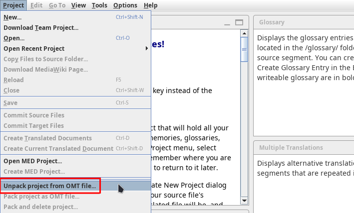
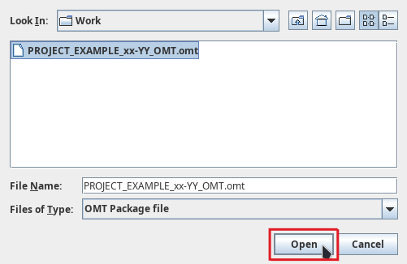
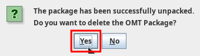
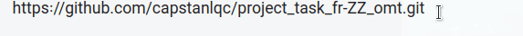
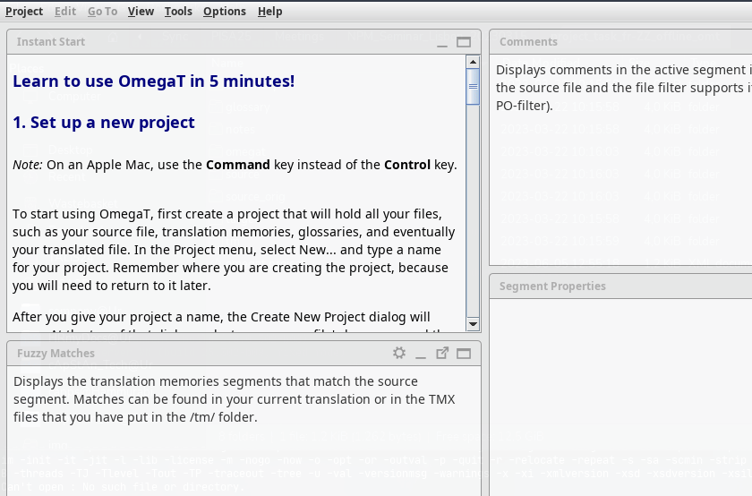
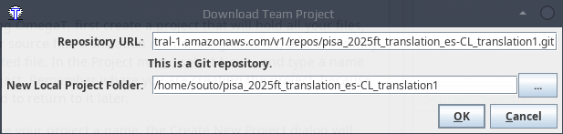
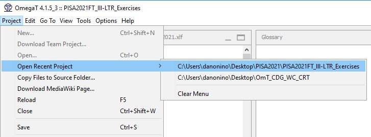

Доступ к проекту¶
Совет
Прежде чем приступить к выполнению описанных ниже действий, продумайте организацию ваших файлов и папок. Несколько рекомендаций можно найти здесь.
Доступ к новому проекту¶
В зависимости от того, каким является проект, с которым вы должны работать (онлайн-проектом, то есть командным проектом, или автономным проектом), существует два способа открыть проект для работы первый раз.
-
Если вам нужно работать с автономным проектом, то вы получите новый пакет для OmegaT (так называемый пакет OMT или файл с разрешением
.omt). Перейдите к разделу Распаковка автономного проекта ниже, чтобы узнать, что нужно сделать для распаковки проекта. -
Если вам нужно работать с онлайн-проектом (иначе командным проектом), то вы получите URL-адрес репозитория, в котором хранится проект OmegaT. Перейдите к разделу Скачивание командного проекта ниже, чтобы узнать, что нужно сделать, чтобы загрузить командный проект из репозитория.
Если вы не уверены, с каким типом проектов вам необходимо работать, то выяснить это очень просто: если вы получили пакет OMT, то у вас автономный проект; если же вы получили URL-адрес репозитория git, то у вас онлайн-проект.
| Вы получили | Проект |
|---|---|
| Файл OMT | автономный проект/пакет |
| URL-адрес репозитория git | онлайн-проект (командный проект) |
Предупреждение
Распаковку или скачивание каждого проекта OmegaT (в зависимости от того, как именно распространяется проект) необходимо выполнить только один раз. После распаковки или скачивания проекта его можно просто открыть заново, выбрав соответствующую запись в списке последних проектов.
Распаковка автономного проекта¶
Если вы получили пакет OMT, вам необходимо распаковать проект (из пакета OMT), чтобы иметь возможность открыть его в OmegaT в первый раз.
Для распаковки проекта выполните следующие действия:
-
Сохраните пакет OMT в той папке, в которой вы желаете создать проект OmegaT.
-
Для распаковки проекта из пакета OMT:
-
Запустите OmegaT.
-
Перейдете в меню Project (Проект) > Unpack project from OMT file (Распаковать проект из файла OMT):

-
Выберите папку, в которой вы сохранили пакет OMT. Выберите пакет OMT и нажмите кнопку Open (Открыть):

-
Откроется всплывающее окно. Нажмите Yes (Да).

-
Теперь вы можете работать в проекте.
Скачивание командного проекта¶
Если вы получили URL-адрес репозитория git, вам необходимо скачать командный проект из указанного репозитория, чтобы иметь возможность открыть его в OmegaT в первый раз.
Информация
URL-адрес должен выглядеть так: https://домен.com/путь/к/репозиторию.git.
Аутентификация¶
В какой-то момент во время выполнения описанных ниже действий или после них OmegaT попросит вас выполнить аутентификацию, поэтому убедитесь, что ваши учетные данные у вас под рукой. OmegaT может попросить вас выполнить аутентификацию один или несколько раз (в зависимости от настроек проекта). Просто введите одни и те же учетные данные столько раз, сколько потребуется.
Как скачать проект из репозитория¶
Для скачивания проекта выполните следующие действия:
- Определите папку на своем компьютере, в которой вы хотите создать проект OmegaT. Мы рекомендуем создать папку
Work(или с любым другим именем) в домашнем каталоге пользователя. Предположим, что путь к папке с проектами будетC:\Users\USER\Work\(для пользователяUSER).
Опасность ❗❗❗
💀 Проследите за тем, чтобы выбранный путь НЕ находился внутри папок, синхронизующихся с сетевыми сервисами, такими как Dropbox, OneDrive, Nextcloud, Google Drive, Syncthing и т. п., или на удаленном сервере или сетевом диске.
- Скопируйте URL-адрес репозитория проекта в буфер обмена (выделите его и нажмите Ctrl+C или щелкните правой кнопкой мыши и выберите Copy (Копировать)).

- В OmegaT перейдите в меню Project (Проект) > Download Team Project (Загрузить командный проект).
-
В диалоговом окне Download Team Project (Загрузка командного проекта) щелкните в поле Repository URL (Ссылка на репозиторий), а затем нажмите Ctrl+V, чтобы вставить URL-адрес из буфера обмена.
-
Щелкните в поле New Local Project Folder (Локальная папка нового проекта). OmegaT предложит путь к тому месту, где будет создана папка проекта. Дождитесь, пока это поле не заполнится.
Проблема
НЕ НАЖИМАЙТЕ на кнопку ...
Три вышеописанных шага показаны в следующей анимации:

-
Возможно, вам потребуется изменить предложенный путь, чтобы создать папку в том месте, которое вы определили в первом шаге выше. Например:
-
Скорее всего, OmegaT по умолчанию предложит создать проект в вашем домашнем каталоге, например
C:\Users\USER\имя_репозитория. - Измените этот путь так, чтобы он указывал на то место, которое вы предпочитаете, например, следуя нашей рекомендации выше, это будет
C:\Users\USER\Work\имя_репозитория.
Например:

Предупреждение
Проследите за тем, чтобы между папками в указанном пути стояла косая черта.
Закрытие проекта¶
В конце дня, закончив работу, закройте OmegaT (Ctrl+Q).
Повторное открытие существующего проекта¶
После того как вы получили и открыли проект в первый раз, он записан на вашем компьютере, и OmegaT будет помнить его местоположение.
В следующий раз, когда вы захотите открыть проект в OmegaT, перейдите в меню Project (Проект) > Open Recent Project (Открыть последний проект). В списке появится проект, над которым вы работали:

Примечание
Вам следует четко различать открытие недавнего проекта и скачивание или распаковку нового проекта (в зависимости от того, как именно распространяется проект). Открыть существующий проект можно только после его распаковки или загрузки. А скачивать или распаковывать нужно тот проект, который еще не сохранен у вас на компьютере (только один раз).